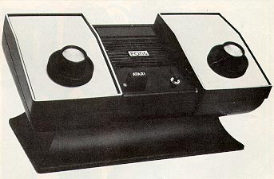
Reprint of an article by Steve Bloom, editor of VIDEO
GAMES
www.atarimuseum.com
It began with one cherry tomato and quickly escalated into a full-scale food fight. As an assortment of leftovers splattered about the room, you could feel the Chief Executive's temperature rising. Minutes passed before he could get everyone's attention. Fear suddenly gripped the participants, and the room settled to a hush. Revealing no emotion whatsoever, he exclaimed: "Nolan would be proud." The Chief Executive smiled. Then the food fight resumed.
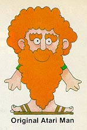 Ray Kassar, Atari's Chief Executive Officer and chairman of the board, was referring to Nolan Bushnell, his predecessor. There is no small irony here since Bushnell not only founded Atari 10 years ago, but was the primary architect of Atari's legendary, unorthodox work style that Kassar has tried so hard to change in the past three years. Working at Atari used to be like one continuous food fight, many former employees say; laboring there now, these people would have you believe, is about as lively as a visit to the county morgue.
Explains Gene Lipkin, the caustic former president of the coin-operated games division: "They do nice letters, and they answer their mail, and everybody is there at eight o'clock. I mean, they have the market on pinstriped suits today. There are more pin-striped suits walking around Atari then there are on the rest of this planet."
Bob Brown, an ex-engineering supervisor who
started with the company back in 1974, describes his thoughts after a recent
visit to Atari: "Ray and everybody looked stoic and conservative, very
three-piece suitish. So many people have come and gone that there
was hardly anybody I knew anymore."
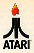 Then what explained Kassar's animated behavior as he presided over the executive's food fight? "I think a lot of people misunderstand him" says Don Osborne, the current vice-president for marketing in the coin-op division. "I don't think anybody has any idea what it's like to be the chairman of the board of Atari. I don't think anybody can comprehend the tremendous demand that is. This company is exploring uncharted territory. No company has ever grown this fast. There are no textbooks that can tell us what to do, and so we are really blazing the way. That's a very unusual experience." To which Lipkin, Osborne's former boss, replies: "They inherited a rocket and they're all hanging on for dear life."
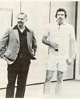At a time when America's industrial giants of the past like General Motors and U.S. Steel are crying the recession blues, that rocket keeps hurtling along at a record clip. Atari's stats tell the story: Each of the last four years the company has doubled its revenues from $165 million in 1979 to a projected $2 billion figure this year. Atari now accounts for approximately two thirds of its parent company, Warner Communications Inc.'s total profits.
Ten years ago, Atari was a garage shop operation that attracted
some of the best and the brightest talent in California's high-tech corridor
of commerce, Silicon Valley. They wore blue jeans and sneakers and
smoked pot and drank kegs full of beer while creating an industry no one
thought was possible. Many of these people feel that they shared
a unique moment in time during those early years and that Atari has changed
drastically since they have left. That of course, is to be expected
of former employees. But these ex-Atarians do have some interesting
stories to tell.
THE DYNAMIC DUO.- Nolan Bushnell
(right) and Joe Keenan,
circa 1974.
In the six years that have passed since Warner took
the floundering video game company off Bushnell's hands for a mere $32
million, much has transpired. The one thing though that all can agree
upon is that Warner's gamble has paid off. "I think you can say that
Atari was the buy of the century," says Brown. "I don't know of any
other better deal than that."
The Saga Begins
Bob Brown was introduced to the granddaddy of all video games, Spacewar, in 1969, several years after Nolan Bushnell had started playing it at the University of Utah. Brown was fascinated by what he saw: a ballet of white figures dancing across the stage of a CRT screen. But he had no idea what to do with it. "How do you sell a $20,000 game system?" Brown wondered. "It just didn't make sense to me that there was a market for games. Nolan showed there was. It was one of his wild visions."
Just about that time the price of integrated circuits
began to plummet. Bushnell, by now, had moved to California, taken
a job in Ampex's advanced technology division and, in his spare time, and
started designing a system that could accommodate Spacewar. Dubbed
Computer Space, he sold the prototype to Bill Nutting Associates, a relatively
unknown arcade games manufacturer. Since few people had ever seen
a video game before, marketing Computer Space was tough.
"We blew the whole coin-op industry's mind," Nutting recalls.
"We built 1,500 and had to sell some by force. At the '71 A.M.O.A.
(Amusement & Music Operators Association) show there was a few attempts
to copy us. Then, the next year Nolan started Atari and came out
with Pong. The business simply exploded."
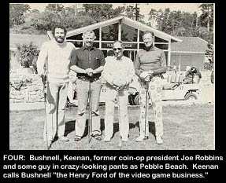 What Nutting fails to mention is the fact that he and Bushnell had had a falling out over Pong. Bushnell, who was chief engineer at Nutting then, wanted a bigger piece of the action for Pong. Nutting refused. "I didn't like his deal," he says. "The kind of royalties Nolan was asking didn't seem fair to me. But, as they say, hindsight is 20-20." Out of a job, Bushnell reminded Ted Dabney, a former Ampex colleague, that they had once planned on starting a company some day. With the $500 in royalties Bushnell earned from Computer Space, they founded Syzygy. However, when they were informed by the Office of the Secretary of State that they were not the only would-be entrepreneurs fascinated by this celestial image (the moon, sun and earth in a straight line), Bushnell and Dabney re-christened the company Atari-after the check move in the Oriental game Go.
What's in a name? In this case, plenty.
If Syzygy foretold Atari's present three division corporate alignment of coin operated
games, consumer electronics and personal computers, Atari
was an even brasher prognostication. As Bushnell likes to say,
Atari is a polite warning to your competition that it is about to be engulfed.
The Stories of Pong
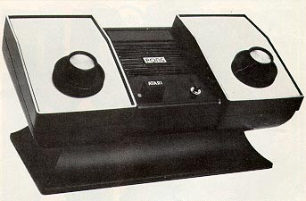
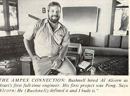
Another case in point is Atari's first consumer product, which was also
Pong. Bob Brown explains: "I got to talking about Pong with an engineer
friend of mine named Harold Lee, who was working in coin-op. I really
wanted to do a consumer product so I asked him whether we could put Pong
on a chip. It would be a dedicated home game for TV that would essentially
be like the coin-op Pong. He said it could be done, and then we sold
Atari on the idea." Consumer sales and marketing was an entirely
new direction for a company with deep coin-op roots like Atari. Distribution
would be the key, and Atari didn't have any on the retail level.
Atari needed help and found it in the form of Sears Roebuck & Co. Barely.
"A guy named Tom Quinn was the one who made the decision," says Brown.
"To me he was really the hero . It was Quinn who gambled on Pong when he
was, of all things, the sporting goods buyer. "We went into production
with the idea of selling 50,000 units." Brown continues. "We ended
up doing double that in the Christmas '75 season. People were waiting
two hours in line to sign up on a list just to get a Pong game."
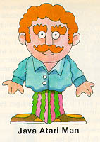
What was interesting about the Sears-Atari alliance was how graphically
it illustrated the chasm that existed between those who toiled in California's
positively laid-back Silicon Valley and the rest of the business world.
Al Alcorn, who negotiated the Sears deal along with Gene Lipkin, recalls
two incidents in particular.
"Some of the technicians who did our early chip layouts were a little
spacey," Alcorn says. "When the Sears guys came by we'd hide them
in the back room. Well, Bob Brown had designed Video Music, our weirdest
product ever. Hook it up to your stereo and TV at the same time,
and the sound triggered some pretty psychedelic visuals. The Sears
guys took one look and asked what we'd been smoking when we did that.
Naturally, one of our techs lit up a joint and showed them.
"Another time, 10 guys came out to see our new plant in Los Gatos.
We were in our everyday work clothes-tennis shoes and jeans -and they were
all dressed in three-piecers. Everybody was getting a little uptight,
so Nolan and a bunch of us jumped into some empty boxes and took a ride
around the building on the conveyer belt.
"That night the whole group had dinner. We all went home, cleaned
up and changed into suits, hoping to make peace. Meanwhile, they'd
gone back to their hotel and changed into jeans and sneakers. What
a mix-up! The whole thing was pretty funny, we thought."
The Beginning of the End
Gene Lipkin left Allied Leisure in Florida in 1974
to join Atari as vice-president for marketing. He still remembers
his first conversations with Bushnell well. " Nolan really wanted
to shoot the moon. 'Listen guys, he'd say, 'we can have this business the
way it is, and it will be good to us for the rest of our lives, or we can
take a big risk and go for it and see what happens, and we can blow it."
Bushnell went for the moon-selling seasonal consumer products-and blew
it. Even with the success of dedicated Pong in'75, the cash wasn't
there-it was all going back into inventory that wouldn't be sold off until
Christmas. And coin-op games, by the way, weren't exactly tearing
up the arcades. Atari was in trouble. Some have speculated over the
years that Bushnell's idiosyncratic style had finally caught up with him.
To the contrary, Lipkin claims that Atari was a "well-run company" with
good financial discipline.
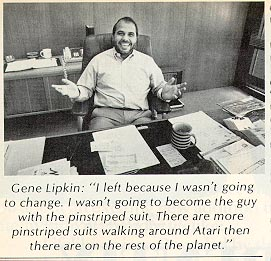 "We were not great structure guys," he admits, "but we didn't think you needed a great structure. We didn't believe in a lot of things big companies were about. And, in fact, neither did Warner at that point." The only thing Atari was lacking, he says, was money. "It's funny," Lipkin goes on, "we had originally made a grocery list of 10 companies we would be willing to merge Atari with and Warner was not on that list. But through a connection, we made contact with Warner. We were really impressed with them, and I think they liked what they saw. Then boom-boom, the deal was made. I mean, it was that quick." So well did everyone get along at first that Bushnell and Manny Gerard, Warner's principal, exchanged signed notes on napkins in the restaurant where the deal transpired. That was October '76.
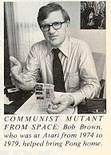 The next big news out of the Atari camp was another consumer product. This one carried the imposing namesake, Video Computer System (aka, VCS). It was Atari's entry in the programmable game systems race. Code-named Stella, the VCS was conceptualized at Atari's Grass Valley think tank, primarily by Steve Meyer (he is presently the acting president of the computer division), and then developed back at the Los Gatos headquarters by a group of engineers led by Jay Minor.
After its debut at the summer Consumer Electronics
Show in 1977, Atari began mass producing the system in preparation for
the expected Christmas rush. But sales were soft and stayed that
way throughout the following year as the public continued to ignore this
new and improved video game product. "It was an education problem,"
contends Al Miller, who wrote several early cartridges before moving onto
Activision. "People didn't know whether to spend $30 to $50 on the
numerous dedicated games that were still on the shelves or slap down $180
for the VCS, a considerably larger expense. But as the library of
games began to diversify, the public came around. It was an evolutionary
process."
The Showdown
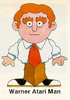
With Warner's money, Atari built 800,000
Video Computer Systems in 1978. Ray Kassar, a former executive vice-president
at Burlington Industries, had been installed as the president of the consumer
division at the beginning of the year. All was not going well. "It
was a very bad year for the company," explains Joe Keenan, who was president
at the time. "Clearly we built too many units, which translated into
potential disaster. We're talking $40 million worth of inventory
that the company was stuck with."
Translated: Gerard's superiors were growing more nervous
by the day. According to Keenan, Gerard was being pressured to make
a change. "I think he had the same confidence we had that, hey, the
400,000 left over units were going to move out, that '79 was going to be
a banner year but I think his job was as much on the line as ours turned
out to be. I was in the meeting and sensed that the other fellows in the
office of the president were very afraid of the Atari situation."
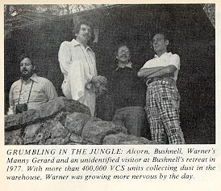
The meeting -- Warner's annual budget meeting -- took place in November.
It proved to be Bushnell's downfall. Before a crowd of high-level
executives, Bushnell and Gerard locked horns, screaming at each other for
hours. Says Keenan: "We were heads of a big, growing company, but
we couldn't make a major decision without calling Manny Gerard. He
was the boss figure. Yet we didn't want to get thrown out we had
a big financial stake there." But out they went (actually Bushnell
was demoted from chairman to a director, and Keenan vacated the presidency
for the chair position) and in came Kassar. "Ray could have been
the scapegoat," Keenan reflects bitterly, "but that wasn't
as satisfactory. Manny said he wanted to make him chief executive,
and so cest la vie."
The Transition
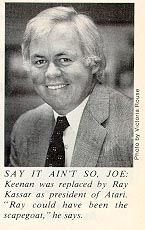
Joe Keenan had started in
the business as a salesman at IBM. After realizing that he would
never become the president of the company ("that's my humble streak," he
says), he left for a position at Applied Logic. "I saw that by going
to smaller companies it would be possible to get to the top," Keenan confides.
"So here I am." Keenan didn't last very long as Atari's chairman
of the board, nor did Bushnell as a mere director of the company he had
founded. When they finally departed Atari, they were granted one
last wish however: to buy back a fast-food chain concept called Pizza Time
Theatre that had been incubating in Grass Valley since 1974 Bushnell the
visionary and Keenan the salesman were ready to strike again.
Meanwhile, over at Atari , the axe had begun to fall. Kassar's first policy edict in January '79 was a freeze on all VCS software development. Essentially, this freed Bob Brown's research and development division from its duties making the entire staff of 30 engineers expendable. Brown's division was the first to go.
"I really had no conception that he was going to do that," says a feisty engineer. "In fact, when Al (Alcorn) told me what had happened I didn't understand what he was saying-- I couldn't conceive of Atari cutting off its future by chopping off its R&D work. It will always be my opinion that being engineering-oriented was what made Atari successful."
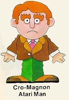 Later in the year, Gene Lipkin, the president of the entire coin-operated division, was forced to close down the company's beleaguered pinball works. "It was a mess," he admits, "but we pulled the plug too soon." Noah Anglin, the engineering vice-president at the time, agrees. "Atari pinball machines were disasters, but they were also artistic masterpieces. I mean, we worked day and night, seven days a week on Superman, which was the state of the art, and then it got killed. That's probably something I never really forgave the corporation for."
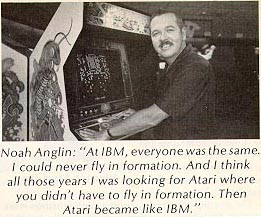 But Kassar could care less -- he was moving full-speed ahead. The new CEO concentrated mostly on selling the VCS year-round and establishing a company work style more consistent with his own. Kassar never had to send out a memo detailing work hours, a dress code and so on. Gradually, people got the message. Frank Bullouz, who became vice-president for marketing in coin-op when Lipkin was promoted to president, recalls when Bushnell and Keenan were the only ones who wore ties in the company. "I came to work in jeans and boots and never a tie. Then, after Nolan and Joe were gone-I don't remember what my reasoning was-I started to change. I'd wear slacks and still a shirt, open-collared. Then I progressed into wearing a tie ... and once in a while a jacket. Eventually, everyone else did the same. I think it was that we were becoming more of a professional organization. it just slowly evolved into a different dressing style at Atari."
For Don Osborne, who was
hired by Ballouz in 1977, the evolution was 360 degrees. "The first
day I came to work," he says, "I walked in wearing a three-piece suit.
I remember sitting in Frank's office when Gil Williams (vice-president
for manufacturing at the time) came in, took one look at me and laughed.
He just laughed at me. So I said, 'What are you laughing at?' He said,
'The tie.' That was the last time I wore a tie for two years."
The Exodus
Ironically, just as Warner and Kassar had pulled the company out of the financial hole with a sweeping marketing and advertising campaign that created unprecedented demand for the VCS, Atari's desertion rate began to climb. Most notable of the early defectors was Steve Jobs, who, during his tour in coin-op, had been designing a personal computer that became the Apple, and four software designers who went off to form Activision. Perhaps less notable, but of equal importance, was Noah Anglin's departure. Like Keenan, Anglin began his professional career at IBM. After 14 years there, he brought his engineering and manufacturing expertise to Atari in 1976. He couldn't help but note the contrast in corporate styles. "At IBM everyone was the same," he says. June, 1981. "They used to put on my reviews: 'Anglin, you can be a wild duck but you have to fly in formation.' I never could fly in formation. And I think all those years I was looking for Atari where you didn't have to fly in formation."
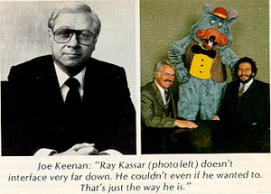 But times change, and Anglin grew unhappy at Atari as well. As an engineer, he was particularly disturbed by the slow movement of product out the door. "The company just got too big, too fast," he maintains. "Three months was not an unusual length of time to develop and manufacture a game when I got there. Suddenly, it was taking a year, a year and a half. "We might yell and scream for 15 minutes at each other," Anglin adds, "but we'd make a decision that most companies would take a year to make. We were making decisions on the fly that involved major changes in the company. They can't do that anymore. Atari became like IBM."
Indeed, the company's growth has been dramatic: from less than 1,000 employees about the time of the Warner sale to nearly 10,000 today. So massive has Atari become the company has more than 50 office buildings in Silicon Valley 50 miles south of San Francisco and manufacturing facilities in El Paso, Tex., Taiwan and Ireland that few really know who's making what decisions on the executive level. Many observers claim that Atari is now "out of touch, out of mind."
"When you work for a small company," says the obviously biased Joe Keenan, "it's quite possible for everybody to know the ultimate decision-maker. The smallest guy knows the top guy, which makes you feel that you're part of that decision just because you know who made it. But as a company gets bigger, that becomes quite impossible. There are certain management styles which unfortunately make it more impossible, and maybe that's the case at Atari. Says Anglin: "Ray's a perfect guy to run a corporation. If you want someone who bases his decisions on facts, not emotions, then that's him. He's a strictly bottom-line oriented guy."
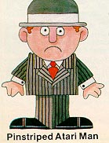
In the cases of Al Alcorn and Gene Lipkin, two continual thorns in Kassar's
side, both are being paid handsomely to stay at home. "I left because
I wasn't going to change," Lipkin bristles. "I wasn't going to become
the guy with the pinstriped suit. That wasn't me." Alcorn would sooner
tool around in his planes and operate his trout farm in Carmel than fight
with the powers that be at Atari and Warner. "I'm part of the beach
club," Lipkin says with a touch of whimsy. "But if I had my druthers,
I'd rather be in the business."
The Next Step
In this, the tenth year of Atari's existence, many exAtarians are able to find consolation in their latest endeavors. For example, the software company Imagic, which was started by a group of former Atari and Mattel employees, will ship somewhere in the vicinity of $50 million worth of cartridges in 1982. Videa, comprised of three rebellious coin-op engineers, should release its first arcade game sometime in the next year, and Steve Ritchie and Eugene Jarvis, former pinball designers, continue to wreak havoc in the arcades, courtesy of Williams Electronics. After three years at Hitachi in a non-game related position, Bob Brown suddenly resurfaced on the scene last June with an unusual piece of hardware that can upgrade the Atari VCS. Once plugged into the system, his Supercharger and its compatible software (which must be played on a cassette tape recorder) provides remarkable graphics and superior game play. Marketed by Arcadia-Brown is the executive vice-president-the Supercharger is an interesting alternative to purchasing a new TV-game system. Noah Anglin has been keeping himself busy, too. In addition to supervising the manufacturing of Vectrex, General Consumer Electronics' exciting new portable game system, he has begun to search for venture capitalists who would back another new game company. "I think I could put together a reasonably good team," he says, "and do it the right way. Keep the fun element in it. I think there is a new look to the product coming. Maybe a different version of the product. Like when Atari did the wide-bodied pinball's with the jazzy new look. I think something like that is going to happen in video."
So does Gene Lipkin. Right now he is president of By Video Inc., one of 10 companies under the umbrella of the Catalyst Group, Bushnell's assembly line for would-be entrepreneurs. "We see the business as a real business of opportunity." Lipkin explains. "Clearly a business that we can make a big contribution to, because we think the technology movement in the business has slowed down significantly in terms of where people are willing to take risks. They're not doing that today. The big corporate mentality of 'Don't rock the boat' has become very widespread in the Valley. Well, I don't believe that that's how great companies get started or really grow."
"Atari was an incredible, incredible story," Lipkin goes on. "And a real credit to the fact that entrepreneurs can succeed, and a credit to hard work. Success comes to those who hustle wisely. I think that Atari really demonstrated that."
The wisest hustlers of them all -- at least in this saga -- were Nolan Bushnell and Joe Keenan. Rewarded generously by Warner in 1976 (Bushnell cleared $15 million, Keenan $2.2), the duo, as mentioned earlier, immediately turned around and bought the one operating Pizza Time Theatre and the concept for a half-million dollars. Four years later, more than 100 such stores have been opened, and revenues are approaching $75 million. Although Pizza Time's success is similar in many ways to Atari's early growth, Keenan cites what he considers the major differences. "Nolan and I are 10 years older, and therefore our views are 10 years older than they would have been at Atari. There is definitely a difference in how you behave when you're 28 and how you behave when you're 38. So, this company is a little calmer, a little more mature than Atari was, but not a lot."
Keenan, however, is still mischievous enough to take a last shot at Atari. "I'm proud of the fact that already four years after we left they're still growing on absolutely the same products that we put into position. Their big success story has been the VCS -- well, that was our concept. We engineered it, we built it, we brought it into the market. I'm actually disappointed that Atari hasn't innovated a thing since we left. If that doesn't change, Atari is going to lose its commanding position, and I might be embarrassed by having been associated with it."
Atari needn't worry for now. It's not about to lose its commanding position in the video games business, especially with George Lucas (Lucasfilm and Atari have agreed on a joint game venture) and McDonald's ("Taste the thrill of Atari at McDonald's") on the company's side.
But there is talk in the Valley
about the expiration of Bushnell's non-compete agreement with Atari.
Talk may be cheap, but one of Bushnell's confidants, asked recently if
"King Pong" has been considering a return to the video game arena, responded
firmly: "On October 1, 1983 at 10a.m. Nolan will have a game on the
street."